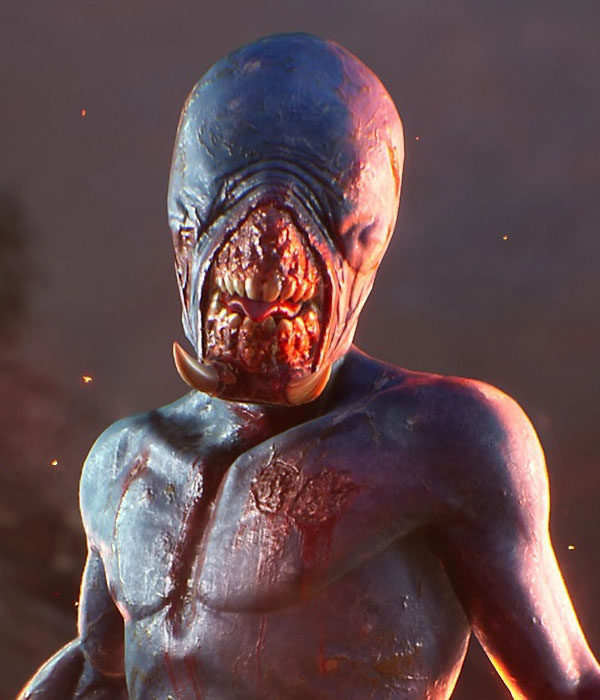

PUPPETEER
Eligos é um demônio focado em controle, dano elétrico e pressão constante. Ele se destaca ao possuir unidades e atacar rapidamente, dificultando a reação dos sobreviventes. Sua mobilidade e imprevisibilidade fazem dele um dos demônios mais perigosos em mãos experientes.
Atributos
Habilidades
Units you possess have more health, deal more damage, and their attacks increase fear in their targets. Additionally, possessed evil units inflict bleeding damage.
Possessão Rápida
Permite controlar unidades com maior eficiência e velocidade.
Dano Elétrico
Seus ataques causam dano adicional em área.
Teleportes
Alta mobilidade para confundir sobreviventes.
Pontos Fortes
- Alta pressão constante
- Difícil de prever
- Ótimo controle de unidades
Pontos Fracos
- Dependente de habilidade do jogador
- Frágil sem energia
- Menos eficaz contra equipes organizadas
Dicas
Use possessão com timing, não desperdice energia.
Pressione cedo para atrasar o loot dos sobreviventes.
Use sua mobilidade para atacar de surpresa.